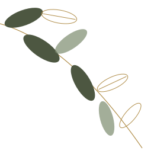
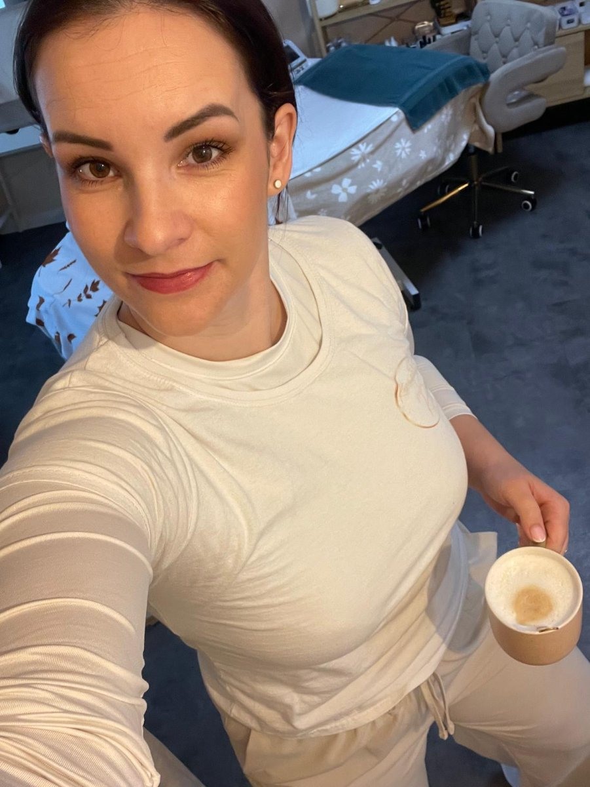
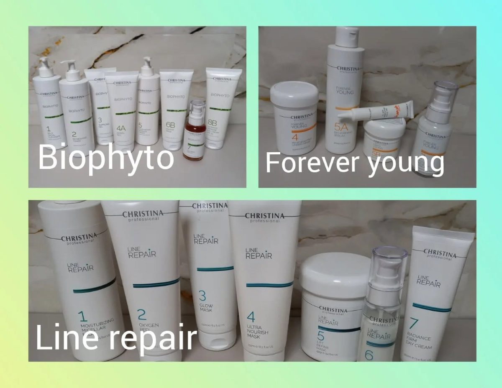
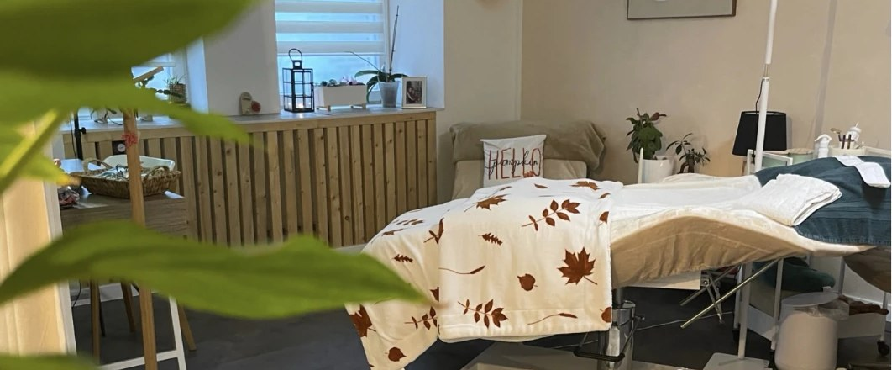
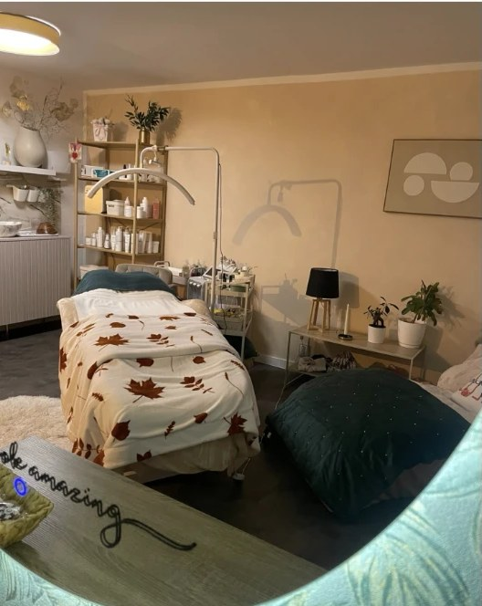

O mně
Kdo jsem?

Kosmetička
Kateřina Fantová
péče o pleť pro ženy i mužeJmenuji se Kateřina Fantová, je mi 33 let a v listopadu 2024 jsem si splnila velký sen – úspěšně jsem zakončila studium kosmetičky.
Moje cesta nebyla úplně přímočará. Od dětství jsem snila o práci veterinářky, později jsem objevila vášeň v pečení dortů, ale srdce mě nakonec táhlo ke kosmetice.
Mezitím co jsme s manželem budovali náš domov, jsem si udělala kurz permanentních řas, který to vlastně celé odstartoval. Komunikace s klientkami, termíny atd. Postupně vznikl nápad vlastního salonu, a bylo to to nejlepší rozhodnutí.
Dnes se naplno věnuji péči o pleť, a tahle práce mě nesmírně baví.
S jakou kosmetikou pracuji?
Pro svůj salon jsem si vybrala kosmetiku CHRISTINA. Dermokosmetika CHRISTINA je izraelská korektivní kosmetika, která řeší různé estetické problémy pleti jako je akné, post-akné, suchá a mastná seborea, cévní defekty, hyperpigmentace, podrážděná a citlivá pleť, předčasné stárnutí pleti, vrásky.
CHRISTINA kosmetika má 11 profesionálních řad a přes 200 přípravků pro domácí péči.
Postupně se školím a přikupuji řady, které právě tato kosmetika nabízí. Měla jsem možnost si vyzkoušet i jiné druhy kosmetiky, ale k srdci mi přirostla právě CHRISTINA. Navíc má opravdu viditelné výsledky a to je přesně to, co pro své klienty chci. Prostě to funguje.



26. 6. 2026 jsme oslavili první rok salonu